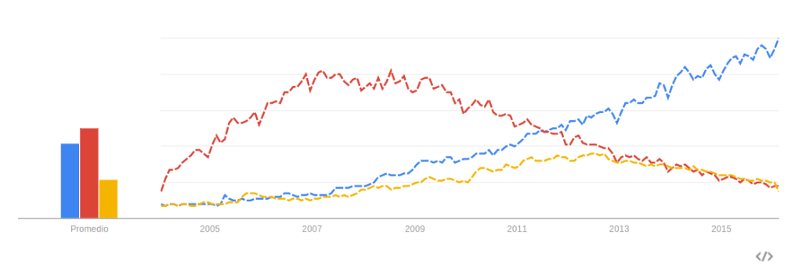
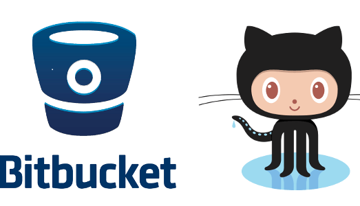

¿Que es Git?
Git es un sistema de control de versiones que está enfocado en la flexibilidad para los programadores y provee herramientas para gestión de equipos de desarrollo. En su sitio oficial se define como :
"Git es un sistema de control de versiones libre diseñado para desarrollar todo tipo de proyectos, grandes y pequeños con velocidad y eficacia."
Sin embargo y a pesar de que es el líder actualmente y a desplazado a su gran rival SVN, es fácil encontrar equipos de desarrollo que aún rechazan usarlo y es por ello que vamos a enumerar una serie de ventajas que posee y los motivos para usarlo:
Git cuenta con la mayor comunidad de desarrolladores
Git cuenta con la mayor comunidad de desarrolladores. Actualmente, Git es el sistema de control de versiones mayormente usado y es por ello que posee la mayor comunidad, con las ventajas que ello conlleva ya que cuando te encuentres un problema, encontrarás rápidamente la solución en la multitud de foros y chat que hay dedicados a Git.
Repositorios en la nube
Git tiene los mejores repositorios en la nube para manejar tus proyectos, los cuales permiten que tu tengas un control completo de todo tu código y permite el acceso y la posibilidad de estar conectado con tu equipo, sin importar si se encuentran en la otra punta del planeta. Cuando eliges un repositorio git, posees un gran abanico de posibilidades para correr tu proyecto localmente o en la nube, pagando o incluso teniendo una versión gratuita, compartiendo tu código con la comunidad o manteniéndolo privado.
Lo usan los grandes
Cuando hablamos de tecnología siempre debemos mirar de reojo cómo están desarrollando los grandes, Facebook, Google, Microsoft, etc y si nos dirigimos al sitio web de Git vemos que todos ellos los están haciendo. Y no sólo lo usan los grandes sino que los mayores proyectos a nivel mundial también lo usan. Precisamente, Git nació como sistema de control de versiones de Linux de la mano del gran Linus Torvals. Hoy en día, Google usa Git para el proyecto Android

Operaciones de despliegue
Hoy en día, los servidores de aplicaciones en la nube son capaces de realizar automáticamente el despliegue de tu rama master a producción usando git hooks, el cual es una potentísima herramienta para automatizar scripts una vez que el commit definitivo está hecho. Servidores como Google App Engine o Amazon Web Services permiten que hagas esto, el cual no es sólo una manera segura y cómoda sino que también es la manera más limpia de mantener la integridad de tu código cuando despliegas a producción.